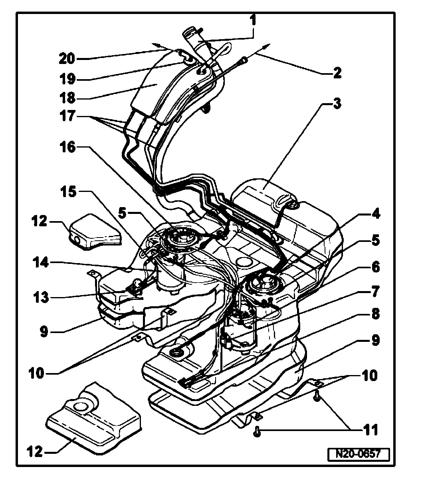

Fuel Filter: Locations

Fuel tank with attachments and fuel filter, assembly overview
1 - Fuel filler neck
2 - To EVAP canister
3 - Fuel tank
^ Support with engine and transmission jack V.A.G 1383 A when removing
4 - Flange with fuel filter
^ Right side
^ Fuel tank must not be more than 1/2 full when removing tank
5 - Locking ring, 145 Nm
^ Remove and install with key T1 0202
^ Check if securely seated
6 - Fuel delivery unit
^ Left side
^ Checking fuel pump. Refer to Fuel Pump, Checking.
7 - Fuel supply sensor 3 -G237-
^ Left side
^ Clipped into bottom of tank
^ Checking:
Refer to wiring diagrams
8 - Suction jet pump
^ Left side
^ Clipped into bottom of tank
9 - Protective cover
^ For bottom of fuel tank
10 - Securing strap
^ Note installation position
^ Check if securely seated
11 - 20 Nm + 1/4 turn (90°) further
12 - Protective cover
^ For top of fuel tank
13 - Suction jet pump
^ Right side
^ Checking fuel pump. Refer to Fuel Pump, Checking.
14 - Fuel delivery unit
^ Right side
^ Checking fuel pump. Refer to Fuel Pump, Checking.
15 - Sender for fuel gauge -G-
^ Right side
16 - Flange
^ Right side
^ Fuel tank must not be more than 1/2 full when removing tank
^ With fuel pressure regulator
^ With gravity valve
^ Separate parts. Refer to Individual Components of Right-Hand Flange.
^ Note installed position on fuel tank. Refer to Installation Position of Flanges of Fuel Delivery Units.
17 - Breather line
^ Check if securely seated
18 - Expansion tank
19 - Gravity valve
20 - To pressure retention valve